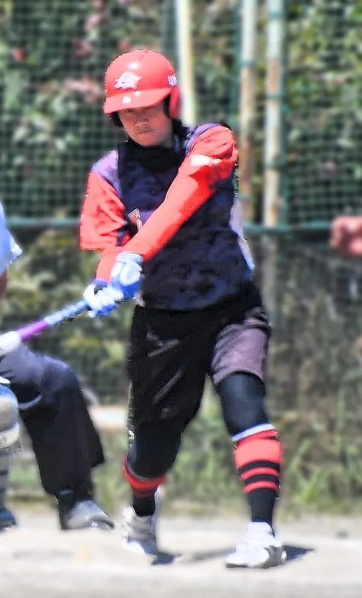
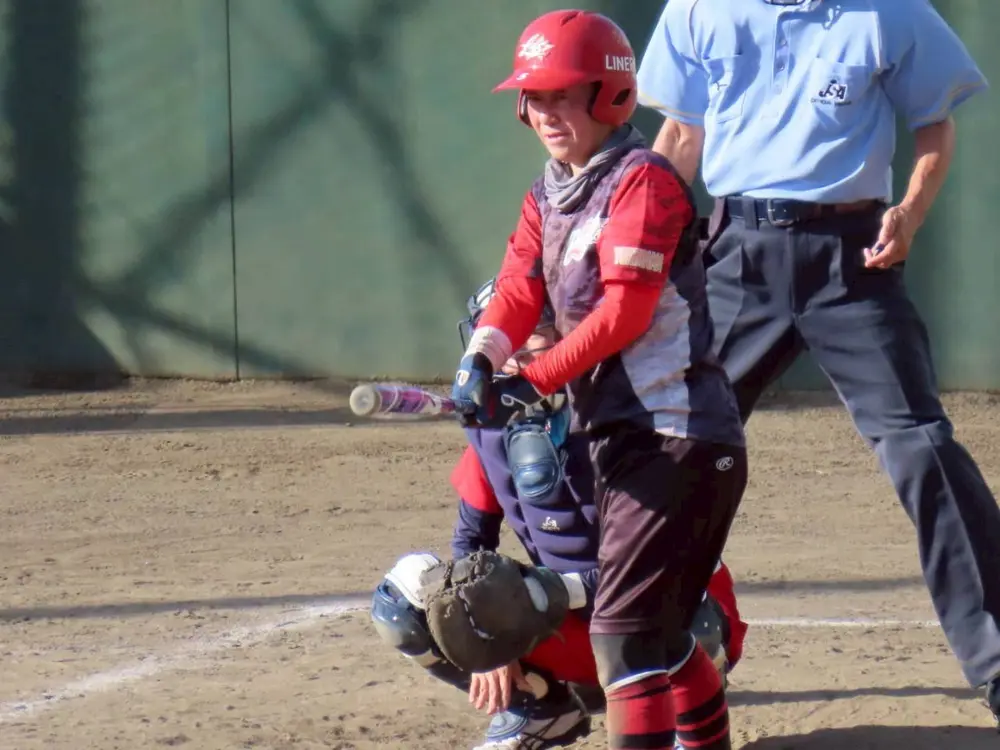
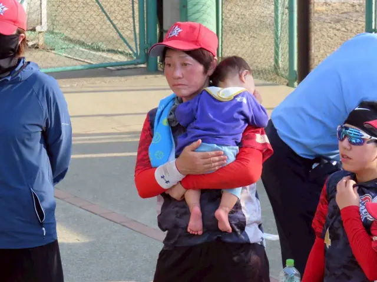
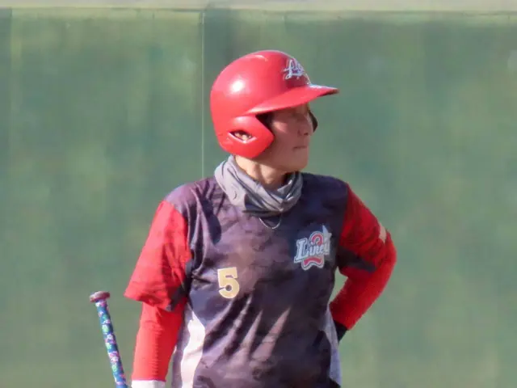
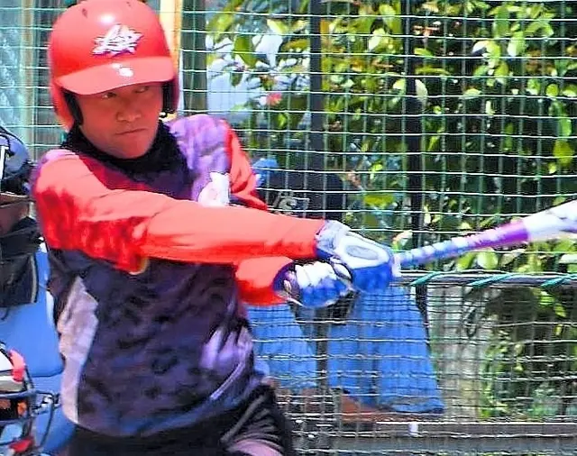

MEMBER INTERVIEW
畑田 なつみさん
メンバーインタビュー




INTERVIEW

畑田 なつみさん
2006年参加 50代 女性
参加したきっかけ
20年前に、おばさまに猛烈にスカウトされて入部しました。
好きな食べ物
果物全般特にスイカ
趣味
ピアノを弾く
オーケストラを聴く
玉置浩二のライブに行く事
コメント
令和8年4月現在ライナーズは創立21年目を迎えます。
当時、未経験の子連れママ達を率いて子育てをしながら楽しくソフトボールをしてきました。
チームの運営がスムーズに行かない事も多々ありましたが、今も楽しくソフトボール出来てます。
年齢層は、20代から50代まで色々です。
レディース、エルダーと年齢層に沿って試合に参加しております。
これからもドシドシソフトボールをやりたい方募集してます。
楽しくソフトボールしましょう♪気軽にお問い合わせください！
今後ともライナーズをよろしくお願い致します。
横浜市港北区のライナーズで、
ソフトボールを楽しみませんか？
ライナーズ（LINERS）は、神奈川県横浜市港北区を中心に活動するレディース／エルダーソフトボールチームです。
経験やブランクを問わず、見学・体験を歓迎しています。参加をご希望の方は、InstagramのDMからお気軽にお問い合わせください。
\ チームメンバー募集中！ /
お問い合わせはこちら！